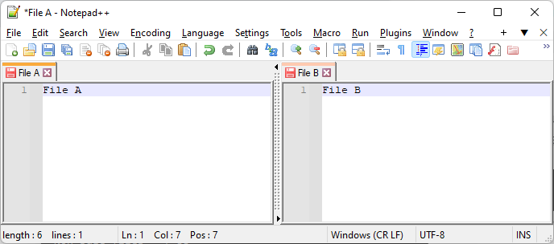
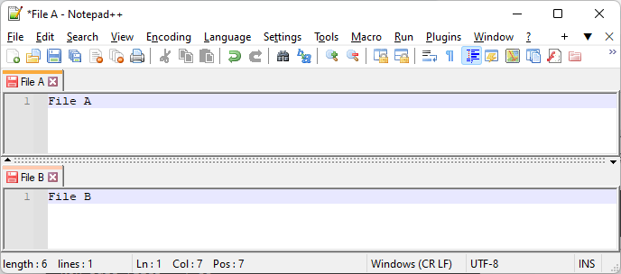
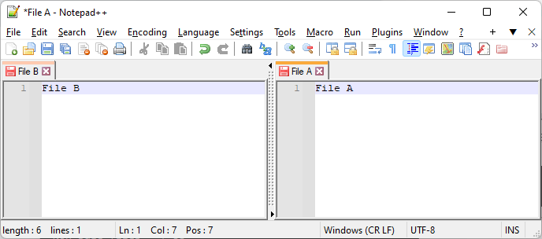
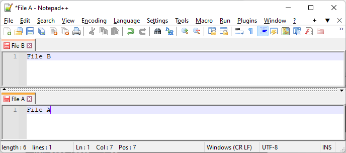

The View menu controls the look of Notepad++, including how Notepad++ and the Windows operating system interact, what features and panels are active inside Notepad++, and whether there are one or two Views (visible files) active at the same time.
Many of the entries in the View menu act as settings or toggles, to show or hide some feature: the feature will be visible when there is a checkmark ✔ next to the menu entry, and it will not be visible if there is no checkmark shown. Some of these are remembered every time you run Notepad++, and others are just active for the single session and not remembered – those that are remembered will be marked with a ↗ in this manual.
Application Views
Choosing Always On Top will make the Windows OS always keep Notepad++ on top of of other windows, even when you give other windows focus. If this is blocking another window you need access to, you can drag one of the windows, or you can uncheck Always on Top mode and then switch to the blocked window.
Choosing Toggle Full-Screen Mode will cause Notepad++ to take up the full screen, and the title bar, menu bar and tool bar will not be visible. The menu bar will no longer be accessible through Alt-key accelerators, so the Notepad++ menu system cannot be used to get out of this mode; however, there is a little + sign in a box (⊞) in the upper right which can be used to exit the full-screen mode; alternatively, use the current keyboard shortcut for this toggle action (the default shortcut is F11), or close Notepad++ with Alt+F4 or other Windows OS methods of closing applications and then restart Notepad++ (which will come up in normal view again). (To clarify: though Alt-accelerators will not show the menu bar or access the menu bar menus, action shortcuts defined through Shortcut Mapper will still work, even if they use the Alt key.)
Choosing Post-It will get rid of the title bar, menu bar, and tool bar (similar to full-screen mode), but it will maintain the same window size as Notepad++ previously took up, rather than enlarging to take up the whole screen. This mode will also hide the tab bar, so you can focus on working on the single visible tab, though you can still use the tab-switching shortcuts to choose another tab. Like full-screen mode, Post-It mode has the ⊞ in the upper right of the window for leaving this mode, or you can use the shortcut (the default shortcut is F12) or exit Notepad++ and restart.
Choosing Distraction Free Mode (new to v8.0.0) will combine full-screen mode with Post-It mode, so it will go full screen, and will hide the title bar, menu bar, tool bar, and tab bar; it will also add wide margins within the edit menu, so the text doesn’t go so wide across the full-screen window.
View Current File In…
The View Current File In… sub-menu will launch the current file in a standard web browser (Firefox, Chrome, Edge, or IE). This works best for HTML or other web documents, but text, XML, and other file types can also be viewed in the browser.
Show Symbol
The Show Symbol↗ sub-menu will affect whether certain characters are rendered with special glyphs so that they can easily be seen or identified in the editor view, and whether certain tab and wrap guides will be visible.
There are four entries that are grouped together, which can affect the rendering of certain characters with alternate glyphs. Please note that while the characters may be displayed differently in Notepad++, the underlying file has the normal characters encoded per the current Language menu settings. The options that are active will be indicated with a check mark ✓. (In older versions, there were only three options, and only one could be active a time, but as of Notepad++ v8.5, the options are independent, with only the last one controlling the others.) Choosing one of the options will toggle on or off that particular option, whereas choosing the Show All Characters will set all the options to either all-on or all-off.
Show Space and Tab: When checked, the space character will show as a colored dot
·, and the tab as a colored arrow→that expands to fill the width of the tab.Show End of Line: When checked, the carriage return character will be rendered as
CRin a small box, the line feed character asLF, and a Windows two-character line ending asCRLF. The boxed characters are normally colored as “reverse text”, so the active Global Styles > Default > Foreground color will fill in the box and the active Global Styles > Default > Background color will define the boxed-letter’s foreground color. Global Styles > Default > EOL Custom color will override that if the Editing > EOL > Custom Color is checked.Show Non-Printing Characters: When checked, the characters below will be shown in a small box, either as the Codepoint or as the Abbreviation, depending on Settings > Preferences > Editing > Non-Printing Characters. The boxed characters are colored as “reverse text”, and can be customized through Global Styles > Default > NPC Custom color settings if the Editing > Non-Printing Characters > Custom Color is checked. (New to v8.5)
Show Control Characters & Unicode EOL: When checked, the control characters in the ASCII/Unicode C0 and C1 control codes will be shown in a small box, either as the Codepoint or as an Abbreviation. In addition to the C0 and C1 control codes, this also influences the Unicode “End of Line” characters LINE SEPARATOR (U+2028:
LS) and PARAGRAPH SEPARATOR (U+2029:PS). (new to v8.5.3)Show All Characters: When checked, this will check all of the previous Show Symbol options at the same time.
The remaining two entries in this sub-menu aren’t affecting the glyphs of characters in the file; instead, they are showing information about Notepad++’s indentation and word-wrap:
Show Indent Guide: when checked, a colored dotted vertical line
⸽will show where each of the tab stops are located if there are enough tabs or spaces at the start of a given line to go beyond a tab stop (as defined by the per-language Tab settings).Show Wrap Symbol: When this option is checked and the Word Wrap option (below) is also checked, there will be a little colored arrow
↲on the far edge of the current line if that line has been wrapped.
Zoom
The Zoom sub-menu will allow you to Zoom In (enlarge the text), Zoom Out (shrink the text), or Restore Default Zoom (which will change the text size back to default settings). These actions all act only on the current View, so if you have two Views visible, only one will be affected. Zooming can also be accomplished by holding down the Ctrl key and using the mouse wheel to go up (enlarge) or down (shrink).
Move / Clone
The Move/Clone Current Document submenu will allow you to affect where the current document is viewed – either to allow editing files side-by-side, or editing in a separate instance of Notepad++ (using a completely separate window).
Move / Clone to Other View
If you Move to Other View, the current file will be moved from one View to the other. If there is currently only one View visible, this command will make the second View visible – it may be to the right, below, to the left, or above the original View, depending on where the second view was last placed. You can also accomplish this Move to Other View by dragging the tab from one View’s tab-bar to the other, or right clicking on the tab and choosing the Move to Other View from that menu.
If you Clone to Other View, the current file will be visible in both Views at the same time.
To change the arrangement of the Views, right-click on the dotted bar between the two Views, and Rotate Right or Rotate Left, which will change the orientation from side-to-side to above-and-below. Given the four possible arrangements of “File A” and “File B” in separate views shown below, doing Rotate Right will go in the sequence 1→2→3→4→1→…, and Rotate Left will go in the sequence 1→4→3→2→1→… (The sequence repeats, and will start from whatever state you are currently in.)
| Sequence | Arrangement | Notes |
|---|---|---|
| 1 |  | LEFT:“File A”, RIGHT:“File B” |
| 2 |  | TOP:“File A”, BOTTOM:“File B” |
| 3 |  | RIGHT:“File A”, LEFT:“File B” |
| 4 |  | BOTTOM:“File A”, TOP:“File B” |
If there’s only one View visible, dragging from the tab bar into the current View’s editor panel will pop up a context menu that allows either moving or cloning to the other View as well. Other ways to interact with the tab bar and Views can be found in Other Resources > Tabs.
Move / Clone to New Instance
If the current file is currently not modified (so no unsaved changes), you can also either Move to New Instance or Clone to New Instance, which will move the active file from this instance to a new instance of Notepad++ (that is, a separate window rather than just another panel in the current window), or make this file open in both the current Notepad++ and a new instance of Notepad++. This will work to create a new instance of Notepad++ even if the Settings > Preferences > Multi-Instance is set to “mono-instance”.
Tab
The Tab sub-menu will allow you to navigate through the various open tabs of the active View.
The numbered entries will activate the Nth tab. The Next tab and Previous tab actions will activate the next or previous tab in the list of tabs (wrapping).
The Move Tab Forward and Move Tab Backward will change the current file’s position in the tab list one slot at a time, forward or backward. The tab order can also be changed by dragging the tabs to the new position in the tab-bar.
The Apply Color # and Remove Color will apply the indicated color to the highlight portion of the tab bar, or remove the color and return it to the default tab color of the active theme. (New to v8.4.6)
Wrapping
The Word wrap↗ entry will toggle whether or not long lines will be wrapped in the display, and affects all tabs in both Views.
When this toggle is not set, you will have to use the horizontal scroll bar to the see the whole current line; when the toggle is set, the line will appear to wrap at the end of your current editor view width, but there will be no newline (so if you open the same text file in a different editor, or a different computer’s Notepad++ with different settings, it won’t wrap at that character). Note: The line wraps on whole-word increments when possible, but if the current word is longer than the entire line-length, it will wrap in the middle of the word.
Focus View
The Focus on Another View action will swap your active focus between the two Views (if both Views are visible).
Hiding Lines
The Hide Lines action will hide the active line or selected lines, and place symbols in the margin to allow you to unhide those lines. The text is still there when you save, it will just temporarily not be visible while you are editing (until you unhide the text, or re-start Notepad++).
Folding
Notepad++ includes a feature for folding of blocks of text. To “fold” text means to temporarily remove from view a block of lines that is hierarchically subordinate to a line directly preceding the block; to “unfold” the text means to reveal that block of text. Another term for folded is “collapsed” and the corresponding term for unfolded is “uncollapsed”. When text lines are folded/collapsed, a horizontal line is drawn across the editor window to indicate that something is not currently being displayed.
Folding is based on the current syntax highlighter lexer for a programming language or User Defined Language (UDL), and the folding follows rules defined in that lexer or UDL. Folding is only possible for file types whose language supports it, when that language’s lexer is active in the Language menu. (For example, the Python lexer defines folding, so you can fold blocks of Python code in Notepad++. On the other hand, the Markdown (preinstalled) UDL that ships with Notepad++ does not define any folding keywords, and so no text will be folded. Similarly, Normal Text has no folding rules and thus cannot be folded.)
For language types that support “code folding”, an additional margin will be created along the left edge of the editing window; this is called the “fold margin”. A fold margin also appears in the “Search results” panel/window when it is shown; here the hierarchy separates the output from previous search runs into groups.
In the fold margin will appear symbols for expansion and contraction of the code hierarchy, according to folding rules for the current language. The symbols that can appear in the margin are:
- An icon with a “-” symbol, meaning unfolded and the line it is on is a possible future fold point
- An icon with a “+” symbol, to signify that some amount of lines below the current line are folded
- Bracketing symbology to show the extent of what could be folded when “-” is the symbol on a foldable “header” line
The exact appearance of the symbols is governed by the Fold Margin Style setting in the Margins/Border/Edge section of the Preferences dialog. The color of the symbols is defined by the Preferences > Style Configurator: check the Global Styles entry in the Language box of the dialog; the Style: options of Fold, Fold active, and Fold margin will set the colors for the folding symbols and their background, as described in the Global Styles section of this manual. The color of the horizontal line that is seen when the section is collapsed is defined by the Default Style’s foreground color.
If folding blocks are “nested” (contained inside other folding blocks), the outermost block is known as level 1, the block immediately inside that is level 2, and so on.
There is a group of folding-related commands on the View menu, which will allow the folding or unfolding of line-blocks of text (‘collapsing’ and ‘uncollapsing’ before v8.4.6):
- Fold All and Unfold All will collapse or reveal all fold blocks in the current file
- Fold Current Level and Unfold Current Level will collapse or reveal the block based on the line of the editing caret
- If Settings > Preferences > Editing > ☐ Make current level folding/unfolding commands toggleable is checked, either of these commands (or their shortcut-equivalent) will cause the current level’s folding to toggle state, so you can use the same shortcut both for folding and unfolding
- The entries in the Fold Level and Unfold Level sub-menus will collapse or reveal every block at level N in the active file
Folding/unfolding can be actuated by menu commands on the View menu relating to “fold” or “collapse”, or by any shortcut keys assigned (see the Preferences > Shortcut Mapper). It can also be invoked by using the mouse and clicking on the symbols in the fold margin. Clicking on a “-” symbol will collapse the lines at that level and below so they are no longer shown; clicking on a “+” symbol will expand the fold so such lines will again be displayed.
As folding can be nested, there is some remembering of internal fold states while the outer states are manipulated. However, there are some ways to override this behavior:
- Clicking a “-” or “+” fold symbol while holding the
Shiftkey: Any internal folds in the clicked-upon tree will be uncollapsed, so that the whole sub-tree hierarchy will be shown fully expanded; if the tree is already fully expanded,Shift-clicking the top-level “-” symbol will do nothing - Clicking a “+” fold symbol while holding the
Ctrlkey: Same as clicking a “+” fold symbol while holding theShiftkey - Clicking a “-” fold symbol while holding the
Ctrlkey: Collapses at the line of the click point, and collapses all subordinate/internal fold points as well (although this won’t be revealed to the user until the fold just created is expanded)
The current fold state of lines is not remembered from one Notepad++ run to the next, nor is it saved in the automatic or a manually-saved session file. It is intended to be temporary. When a file is reloaded by any means it always loads with all lines showing (no “+” will be visible anywhere in the file’s fold margin).
File Summary
The Summary… action opens a small dialog that lists information about the current file, including the full path, the various file timestamps, and the length in bytes, characters (excluding line endings), number of words, and number of lines.
Panels
There are a variety of built-in “panels” (sub-windows) that can be used in Notepad++, and plugins may add more panel functions, in addition to the built-in panels. These panels can be “docked” (so they appear as part of the main Notepad++ application window) on either the right, left, top, or bottom edges; or they can be made to “float”, so they appear as a separate independent window.
The builtin Notepad++ features that use Panels are described in the Built-in Panels section (next). The process of moving the panels to the various edges (or floating location) are described in the Panel Mechanics section (following).
Built-in Panels
The Project Panels↗ sub-menu entries will toggle the display of each of the three Project Panels
The Folder as Workspace↗ entry will toggle the display of the Folder as Workspace panel
The Document Map↗ item will toggle the display of the Document Map panel, which shows a copy of the file in a tiny font, with a highlighted range to indicate which section of the current file is visible in the editor.
The Document List↗ toggle will display the Document List panel, which lists all the open documents and allows easily switching between them. (Prior to v8.1.3, the panel was known as the Doc Switcher panel and controlled through the General preferences, but that name was confused with the Document Switcher Ctrl+TAB settings in MISC preferences.) The Document List can be sorted by Name (or Extension or Path, if those columns are shown) by left-clicking on the header. To view the extension separately from the filename, right click on the header and choose the Ext. entry in the dropdown menu (as of v8.1.5; prior to that, it was in the General settings). To view the path in Document List panel, right click on the header and choose the Path entry in the dropdown menu (new to v8.1.5). As of v8.5, when you add color to a tab, the color will also be applied to the entry in the Document List; and conversely, the right-click menu in the Document List is the same menu as the normal tab bar right-click menu, so it will allow you to add color to the tab from that panel as well. The Document List has collapsible separators for each of the views (new to v8.5): if there is just one visible View, then there will be a single horizontal bar with a ︿ arrow, and clicking that ︿ arrow or double-clicking the horizontal line will collapse (hide) the list of files, and subsequently clicking the ﹀ arrow or double-clicking the horizontal line will uncollapse (show) the list again; if there are two visible views, then the Panel will have two collapsible separator bars, one for each View, which work in the same manner to show or hide the list of files for each view separately. If you right-click on the Document List panel’s header row, you can toggle the ✔ checkmark on Group by View to disable and enable this option (which is on by default); if it’s disabled, the files for both visible Views will be shown in a single list with no separator bar. Finally, aside from the right-click menu’s options for closing files using the Document List panel, if you middle-click on a file’s entry in the Document List, it will also close that file’s tab and remove it from the Document List panel (new to v8.5).
The Function List↗ toggle will display the Function List panel, which lists the functions, methods, and classes in the current file, and allows easy navigation to those sections of the file by double-clicking in the Function List panel. (The “functions, methods, and classes” are programming terms, but the feature can also be used for listing headings or sections of other structured files, or through config files, can be made to match anything else that you choose to match for indicating “sections” of your text, whatever that happens to mean to you.)
Panel Mechanics
Docked Panels can be moved easily to another edge, or to be floating instead of docked, by clicking on the Panel’s title and dragging it to the new location. Another way to make a docked Panel float is to double-click its title bar. When a Panel is already floating, it may be returned to its previously-docked location by double-clicking its title bar.
A Panel docked to an edge of the Notepad++ main window may contain multiple functionalities – that is, each Panel location may hold multiple Panel functionalities simultaneously. When one does, “tabs” identifying functionality will appear at the bottom of the docked Panel window (contrast this with a Panel with a single functionality: the functionality is identified only in the title bar, and there is no tab-bar at the bottom of that docking Panel).
When dragging toward an edge of the Notepad++ main window that does not already contain a docked Panel, when the mouse cursor gets close enough to the edge, the drag rectangle will “snap” to the edge, indicating that if the mouse is released, whatever is being dragged will “dock” in the location shown. However, when doing this with a floating panel, the drag rectangle will not “snap” if the given edge already contains a docked panel. To get it to join an existing docked panel, you have to end the drag over the title bar (at the top) in the case of a single docked item, or end the drag over the title bar OR the group of tabs (at the bottom) in the case of a multiple tabbed group panel.
With multiple tabs in a docked Panel:
double-click an individual tab: breaks only that tab out into a floating window (double-click the title bar of the newly created floating window to “put it back”)
double-click titlebar of any tab: breaks all tabs of that Panel out into a floating window together (double-click a single tab of a floating group will put the single tab back in the previously docked location)
to change the order of the tabs: drag and drop a tab within the other tabs (the tab to be moved will appear to the left of the tab dropped upon); to move it to the far right, drag the tab to the empty space on the right of the rest of the tab list; note that for this type of move there is NO visual feedback to the user on what is occurring.
Panel not Visible
It is possible to accidentally shrink a docked Panel so small that you don’t notice it’s there, or that a floating Panel may be in a location where you cannot see it. The following may help you to find and resize your Panel:
If the top-edge panel is too small, you might just see a small thin rectangle or line between the Notepad++ Toolbar and the Notepad++ Tab Bar for the editor view, or it might be so small you see nothing: if you move the cursor between the Toolbar and Tab Bar and get the up-down-arrow
⇕, it indicates that you can click-and-drag to resize the top panel. If the Toolbar or Tab Bar are not visible, you can turn them on by unchecking Settings > Preferences > General > ☑ Hide.If the bottom-edge panel is too small, you might just see a small thin rectangle or line between the bottom of the Notepad++ editor view and the top of the Status Bar: if you move the cursor between the editor and the Status Bar and get the the up-down-arrow
⇕, it indicates that you can click-and-drag to resize the bottom panel. If the Toolbar or Tab Bar are not visible, you can turn them on by unchecking Settings > Preferences > General > ☑ Hide.If the left-edge and right-edge panels are too small, you might see a small thin rectangle or line between the editor view and the application border, or it might be so small you see nothing: if you move the cursor between the editor view and the application border, you can get the right-left arrow
⇔to indicate the panel can be resized. However, it can be difficult (even impossible) to tell the difference between the panel’s resize arrow and the application window’s resize arrow, since they are nearly overlapping; if you cannot identify the correct resize arrow and instead keep resizing the application, you may want to change the Notepad++ window to Full Screen (View > Toggle Full Screen) or use standard Windows methods to Maximize the Notepad++ window (double-click the application header, click the Maximize button, or use the application menu from the Notepad++ icon in the upper-left to maximize); once it is Maximized or Full Screen, then the resize arrow⇔on the right or left will be for the right or left Panel.If you cannot find a Panel that you believe should be visible, it may be floating and its floating window may not be on a visible portion of your desktop (either covered by another application window, or you were using it in a multi-monitor environment, then it got left there when that monitor was turned off or removed). The discussion in this Community Forum conversation may help you find your hidden Panel, and shows a way you can edit the config files to reset all the docking locations to their original sizes and locations.
Synchronized Scrolling
The Synchronize Vertical Scrolling and Synchronize Horizontal Scrolling will allow the two Views to be locked together, so that if you scroll in one view, the other view will also scroll in the same direction. This is useful for comparing two files or comparing two parts of the same file at the same time. By cloning the same file in both views, and locking them at different locations, you can also use Notepad++ like a “newspaper reader”, showing two columns of text simultaneously.
Text Direction
The Text Direction RTL and Text Direction LTR are useful for text that needs to be written Right to Left (RTL), or to switch a file back to Left to Right (LTR) viewing after it had previously been set to RTL. This is especially beneficial for editing Hebrew and Arabic scripts, and any other writing systems that are read Right to Left.
Live File Monitoring
The Monitoring (tail -f) toggle will have Notepad++ watch the current file for live changes in the background, and will update the display as it notices the underlying file change. This puts the file in a de-facto read-only mode, so that the file cannot be edited in Notepad++ as it’s being changed by whatever task is changing the file in the background. (This is useful for watching a log file as new lines are added to the end, and is inspired by the Linux command tail -f which performs a similar function, hence the entry’s name.)
When in the Monitoring mode, Notepad++ will use an icon on the tab’s title which looks like an eye (because Notepad++ is watching the file for changes).
The Monitoring feature is also similar to the File Status Auto-Detection settings in the MISC preferences, which influences whether Notepad++ will detect external changes in the open file(s) even without Monitoring active.
Remembered Settings
↗: Settings with this symbol next to them on this manual page are remembered from one run of Notepad++ to the next.